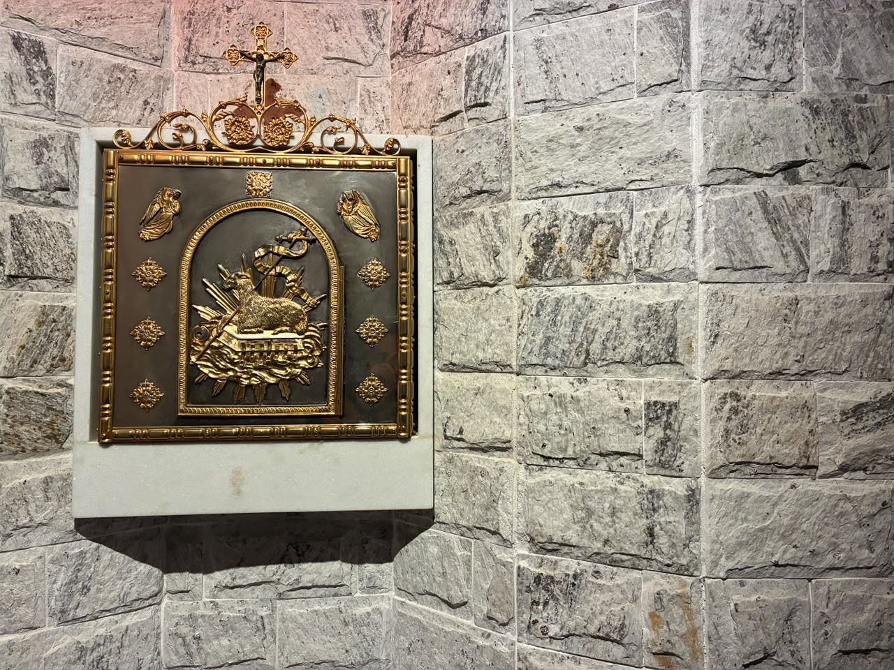

Ofertório e Contribuições
Faça sua Doação
“Cada um dê conforme decidiu em seu coração, não com tristeza nem por obrigação, pois Deus ama quem dá com alegria.” (2Cor 9,7)
Sua oferta em ação
Sua generosidade sustenta esta casa
45%
Manutenção do Santuário
Energia, água, conservação do templo e liturgia.
35%
Obras sociais
Cestas básicas, apoio a famílias e pastoral da saúde.
20%
Evangelização
Catequese, formação e comunicação (PASCOM).
Como doar
PIX ou transferência
Escolha a forma mais prática para você.
Doação via PIX
Chave PIX (CNPJ)
00.000.000/0001-00
Favorecido: Santuário Nossa Senhora de Fátima
* QR Code e chave meramente ilustrativos. Substitua pelos dados oficiais.
Transferência bancária
- Banco
- Banco Exemplo (000)
- Agência
- 0000
- Conta corrente
- 00000-0
- CNPJ
- 00.000.000/0001-00
- Titular
- Mitra / Santuário N. S. de Fátima
* Dados bancários ilustrativos. Substitua pelos dados oficiais.
Dízimo
Seja dizimista
Deseja se tornar dizimista? Procure a secretaria paroquial e faça seu cadastro.
A transparência é um compromisso: a prestação de contas é afixada mensalmente no mural do Santuário.
